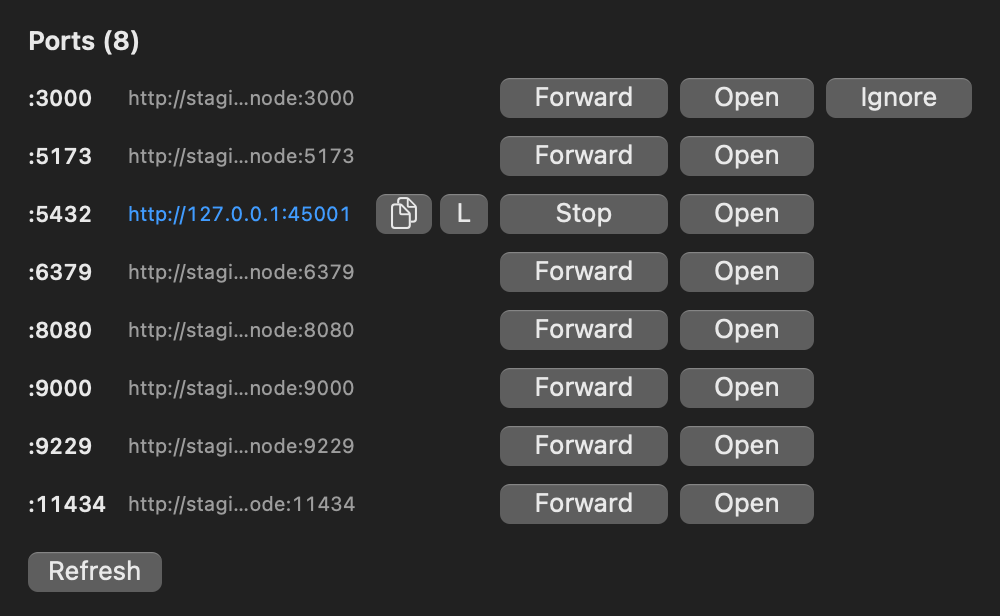

tmux 与 Herdr，变成工作区。
会话、Agent 与本地 shell，收进同一个原生工作台。
$ curl -L -o muxterm.dmg https://github.com/wlingze/muxterm/releases/latest/download/muxterm-macos-arm64.dmg
Muxterm 工作区
已连接
$ cargo check --features gtk
Checking muxterm Finished dev profile $ muxterm list-workspaces [1] muxterm @ local (tmux) [2] yaklang @ remote (herdr) [3] staging-node @ aws (ssh+tmux)
$ git status
On branch main nothing to commit, working tree clean Runtime: tmux Transport: local Scene: resident
muxterm · 本地 tmux
2 个 pane
一个窗口，三个场景
截自 macOS 客户端，会话内为模拟输出。点图可看大图。

一个池子装下所有会话
tmux 会话、Herdr 工作区与项目 checkout 并列在侧栏，各自保留原生 Tab 与 Pane。

Agent 自己汇报状态
Codex 与 Claude 的 pane 归到 Agents 下，显示工作中、受阻或完成，侧栏直接告诉你谁在等输入。

普通 shell 仍是普通 shell
本地工作区不需要复用器。它在本地桥接上跑一个 shell，输入方式与其他 pane 一致。
端口自己出现
SSH 工作区自动扫描监听端口。转发到本机，或显式打开局域网访问。

发现的端口在连接圆点后面。可转发、打开、复制局域网地址，或本次忽略该端口。
staging-node / ssh
扫描完成
:3000
开发服务
:5432
postgres
:8080
预览
只有一套工作区模型
工作区 = 运行时（传输方式）+ 路径。Tab 与 Pane 都是原生的。
| 运行时 | 传输 | 变成 | 保留 |
|---|---|---|---|
shell |
本地 / SSH | 一个工作区 | 进程生命周期 |
tmux |
本地 / SSH | 每会话一个工作区 | detach 与 reattach |
herdr |
本地 / SSH | 每个 Herdr 工作区一个工作区 | 原生 worktree |
控制通道
原生 Tab 与 Pane 跟随每个运行时。
渲染通道
PTY 原始字节直达原生 surface。
活动通道
Agent 状态留在所属工作区里。